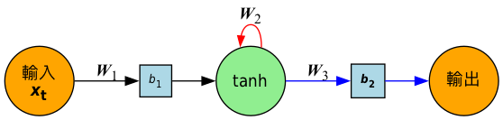
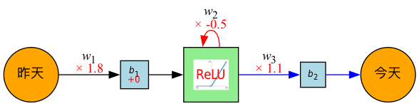
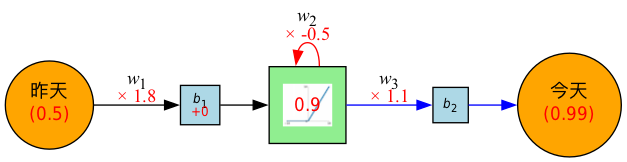
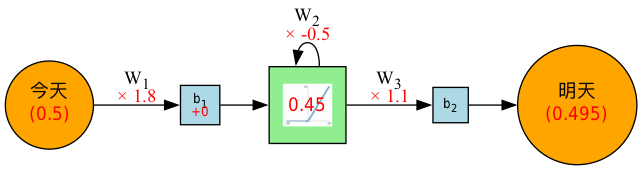

時間序列的預言者：如何通過 RNN、LSTM 和 GRU 預測未來
Table of Contents

1. 遞迴神經網路(Recurrent Neural Network, RNN)
遞迴神經網絡（RNN）是一種專門設計來處理序列資料的人工神經網絡。序列資料指的是那些隨時間連續出現的資料，比如語言（單詞組成的句子）、影片（一連串的影像畫面），或者是音樂（一連串的音符）。
想像你利用每天晚上睡前花30分鐘追劇，每當新的一集開始時，你通常還會記得上一集發生了什麼。RNN也是這樣工作的：它在處理資料（例如一句話中的每個單詞）時，會記得之前的資訊，並利用這些資訊來幫助理解或預測下一步會發生什麼。
那RNN是如何做到這點的呢?這種“記憶”是通過網絡中的循環連接實現的。這些連接使得訊息可以在模型的一層之間前後流動，就像你在看連續劇時保持對劇情的記憶一樣。以下就拿股價預測來做為例子。
1.1. 一個預測股價的RNN模型-1
這裡我們用一個很簡單(實際上會賠死)的RNN模型來預測明天股價的漲跌情況，這個模型的重點在於示範RNN模型如何輸入一段連續資料，最後生成預測結果，至於預測結果我們先不要去嫌棄它Q_Q。如同在CNN中我們以數字來表達影像中的像素(pixel)，在這裡我們也將股票的漲、跌以數字表達：
- 跌：0
- 平盤: 0.5
- 漲：1
這樣一來，我們就可以用數字來表示股價的漲跌情況。這個簡化版的RNN模型目的是輸入某檔股票的過去(昨天、今天)股價漲跌情況，然後預測明天的股價漲跌情況。那我們要如何用RNN來實作這個模型呢？讓我們先來認識一下最簡單的RNN模型(如圖1)：

Figure 1: 一個簡單的RNN模型
圖1告訴我們，RNN模型有三個主要部分：
- 輸入層 ：這是我們將股價漲跌情況輸入到模型中的地方。
- 隱藏層 ：這是模型的核心部分，通常用一個或多個神經元來處理輸入資料。在這個例子中，我們用一個神經元A來表示。
- 輸出層 ：這是模型的結果輸出部分，通常用來預測股價漲跌情況。
圖1中的神經元A每次輸出的結果都會影響到下一次的輸入(參考圖中的紅色箭頭h)。這個特性使得RNN能夠記住之前的資訊，再把這些資訊加入當前的計算中。這裡的 \(W_1, W_2, W_3\) 是權重，用來調整輸入、隱藏層與輸出層之間的連接強度。事實上，圖1只是簡化過的架構，實際上它大致長得像圖2。

Figure 2: 一個簡單的RNN模型
神經元A實際進行了以下運算： \[\boldsymbol{h_t}=f(\boldsymbol{W_1x_t}+\boldsymbol{W_2h_{t−1}}+b_1)\] 其中：
- \(\boldsymbol{h_t}\) ：神經元A在時間點 \(t\) 的輸出（也就是對「今天」的股價漲跌的 預測結果 ）
- \(\boldsymbol{x_t}\) ：在時間點 \(t\) 的輸入（也就是「今天」的外部訊號，例如今天的股價 實際漲跌情況 ）
- \(\boldsymbol{h_{t-1}}\) ：在時間點 \(t-1\) 的輸出（也就是「昨天」的狀態/股價漲跌情況）
- \(\boldsymbol{W_1, W_2}\) ：權重（實際上是矩陣，這裡用簡化的一維符號），分別調整輸入與前一時刻狀態的影響力
- \(b_1\) ：偏差項
- \(f\) ：激活函數（activation function），RNN常用的激活函數為tanh，目的在於引入非線性特性，使模型能學習更複雜的模式。
RNN的激活函數也有人用Sigmoid，較少用ReLU，原因是tanh 輸出區間在 [-1, 1]，便於梯度傳遞（不會無限放大），而ReLU 可能導致梯度爆炸或消失得更嚴重（RNN 訓練已經容易爆炸或消失） 等。在後面的例子中為了簡化運算流程，仍採用ReLU。
1.2. RNN的運作方式
圖2模型的運作方式就像一個簡單的線性迴歸模型，只不過它有一個循環連接，使得它能夠記住之前的輸入資訊。這樣的設計使得RNN能夠處理序列資料，並在每次迭代中更新自己的狀態。
是不是有點抽象？其實這種「把上次的輸出當成下一次的輸入」的概念很簡單，只要你有點程式設計的概念大概都不陌生，就是「遞迴」的概念。讓我們來複習一下這個「計算n!」的程式：
1: def factorial(n): 2: """ 3: 階乘遞迴範例： 4: n! = n × (n-1) × (n-2) × ... × 1 5: """ 6: if n <= 1: 7: return 1 8: # 本次答案 = 當下 n * 上一步的答案 9: return n * factorial(n-1) 10: 11: # 範例 12: print(factorial(3)) # 輸出 6
6
在上述的遞迴程式中，每次在計算 \(n!\) 時，都會先計算 \((n-1)!\)，然後將結果乘以 \(n\)。這樣的遞迴過程就像 RNN 一樣，每次都會將上一次的輸出作為下一次的輸入。RNN 與遞迴的比較如表1 所示，\(n!\) 的每一步都要先算出前一步的結果，RNN 也一樣，每個時刻的狀態都要用到上一次的狀態。兩者本質上都是「遞迴」的概念。
| 遞迴型態 | 當下輸出 | 上一步遞迴 | 計算方式 |
|---|---|---|---|
| 階乘 | \(n!\) | \((n-1)!\) | \(n! = n \times (n-1)!\) |
| RNN hidden | \(\boldsymbol{h_t}\) | \(\boldsymbol{h_{t-1}}\) | \(\boldsymbol{h_t} = f(\boldsymbol{w}_1 \boldsymbol{x_t} + \boldsymbol{w}_2 \boldsymbol{h_{t-1}} + \boldsymbol{b}_1)\) |
1.3. 一個預測股價的RNN模型-2
現在讓我們再回頭來看一下我們的股價預測模型。預測明天的股價漲跌情況的流程如下：
- 首先要知道 昨天 的股價漲跌情況，這樣我們就可以將昨天的股價漲跌情況輸入到模型中，然後模型會根據這個輸入和它的內部權重(\(w_1, w_2, w_3\))來計算出一個輸出值，這個輸出值就是 今天 股價漲跌情況的預測結果。
- 接下來輸入 今天 的股價漲跌情況，模型會將這個值與昨天的預測結果一起計算，然後產生 明天 的股價漲跌預測結果。
假設昨天和今天的股價都維持平盤，則我們可以先輸入昨天的股價漲跌情況(0.5)到模型中：

Figure 3: 輸入昨天股價漲跌情況到模型中
在輸入昨天股價漲跌情況後，模型會將這個值(0.5)乘上權重 \(w_1\)（1.8），再加上偏差 \(b_1\)（+0）。這樣可以得到： \[z=0.5×1.8+0=0.9\] 接著，這個值會通過 ReLU 函數 進行處理。由於 ReLU 的定義是將輸入值小於 0 的部分設為 0，否則保留原值，因此 \(0.9\) 通過 ReLU 後仍然是 \(0.9\)。
接下來，這個值（\(0.9\)）會：
- 一方面進入自循環路徑(圖3中的紅色箭頭)與 \(w_2\) 進行運算，影響下一次預測
- 另一方面作為本次隱藏狀態 \(h_t\)，再乘上權重 \(w_3\)，加上偏差 \(b_2\)，產生最後的輸出 \(y_t=h_t×w_3+b_2\) ，即圖4中的藍色箭頭
如果 \(b_2=0\)，那麼 \(y_t = 0.99\)，這個值（\(y_t=0.9\times1.1+0=0.99\)）就是模型對今天股價漲跌情況的預測結果。

Figure 4: 輸入昨天股價漲跌情況後得到今天股價漲跌預測
但是我們對於今天的股價預測並不感興趣，因為我們已知今天的實際漲跌情況是「平盤、也就是 0.5」。為了預測明天的股價，我們要輸入兩項資訊給模型：
- 剛才用模型以 「昨天的資料」預測出的「今天」股價漲跌，也就圖4中紅色箭頭儲存起來的 0.9。在RNN模型中，它有個特殊名詞叫「隱藏狀態(hidden status)」，這是上一個時間點的隱藏狀態，記做 \(h_{t-1}\)，。
- 「今天的實際漲跌」（也就是平盤：0.5)，將它做為新的輸入 \(x_t\)。
整個預測過程分為以下兩步，對應模型如圖5所示：

Figure 5: 輸入今股價漲跌情況後得到明天股價漲跌預測
先算出「明天的隱藏狀態」: \(h_{t+1}=ReLU(x_t×w_1+h_t×w_2+b_1)\)，其中
- \(x_t = 0.5\)（今天的實際漲跌）
- \(h_t = 0.9\)（模型對今天的預測結果）
得到：\[ h_{t+1}=ReLU(0.5×1.8+0.9×(−0.5)+0)=ReLU(0.45)=0.45 \]
再算「明天的最終輸出」 \(y_{t+1}=h_{t+1}×w_3+b_2\)，其中
- \(h_{t+1} = 0.45\)
- \(w_3 = 1.1\)
- \(b_2 = 0\)
\[y_{t+1}=0.45×1.1+0=0.495\] 所以模型預測「明天」的股價漲跌情況為 \(0.495\)。
1.4. 小結
本節我們用「預測股價漲跌」這個例子，說明了 RNN（遞迴神經網路）如何利用前一次的預測結果和新的實際資料，反覆計算並持續更新自己的隱藏狀態，讓模型能夠處理像時間序列這樣有「過去影響未來」特性的資料。就像追劇需要記住前情提要一樣，RNN 也能「記憶」過去的資訊，把昨天和今天的情況，合併用來推估明天的走勢。
此處我們用的是極簡單的模型（實際上預測股價可不能這麼天真 XD），這個例子清楚展現了RNN的「狀態遞傳」與「遞迴計算」的本質，為進一步學習更複雜的序列模型（像是 LSTM 或 GRU）打下基礎。
2. RNN實作#1
在上面的例子中，我們已經介紹了RNN的基本概念和運作方式。這樣的RNN要如何實作出來呢？或者說，我們如何將這些概念轉化為程式碼？在本節中，我們將使用Python實作出一個最簡單的RNN模型，並用它來預測股價漲跌。
2.1. RNN的程式運作示例
RNN的運作概念非常簡單，就是在每個時間點 \(t\)，RNN 會讀入一個新的序列資料 \(input_t\)，並利用這個資料以及自己的記憶狀態 \(state_t\) 來產生一個輸出 \(output_t\)。
上述過程可以用下面的程式碼來表示：
1: def f(input_t, state_t): # f 函式是神經元的運算，也是利用遞迴的方式來處理序列資料 2: return input_t + state_t 3: 4: state_t = 0 # 初始化細胞的狀態 5: 6: for input_t in input_sequence: 7: output_t = f(input_t, state_t) # f 函式是神經元的運算 8: state_t = output_t # 更新細胞的狀態
在 RNN 每次讀入任何新的序列資料前，細胞 A 中的記憶狀態 \(state_t\) 都會被初始化為 0。
接著在每個時間點 t，RNN 會重複以下步驟：
- 讀入 \(input_{sequence}\) 序列中的一個新元素 \(input_t\)
- 利用 f 函式將當前細胞的狀態 \(state_t\) 以及輸入 \(input_t\) 做些處理產生 \(output_t\)
- 輸出 \(output_t\) 並同時更新自己的狀態 \(state_t\)
那麼，有了如下這個簡易版的RNN，要如何將神經元當下的記憶 \(state_t\) 與輸入 \(input_t\) 結合，才能產生最有意義的輸出 \(output_t\) 呢？
1: state_t = 0 2: # 細胞 A 會重複執行以下處理 3: for input_t in input_sequence: 4: output_t = f(input_t, state_t) 5: state_t = output_t
RNN神經元在時間點t的輸出 \(h_t\) 由以下公式計算: \[ h_t = f(W_x \cdot X_t + W_h \cdot h_{t-1} + b) \]
在 SimpleRNN 的神經元中，這個函數 \(f\) 的實作很簡單，這也導致了其記憶狀態 s\(tate_t\) 沒辦法很好地「記住」前面處理過的序列元素，因而造成 RNN 在處理後來的元素時，就已經把前面重要的資訊給忘記了，也就是只有短期記憶，沒有長期記憶。長短期記憶（Long Short-Term Memory, 後簡稱 LSTM）就是被設計來解決 RNN 的這個問題。
2.2. RNN的程式模型架構
當然，實際應用RNN模型時我們不可能使用自己手刻的這種陽春版RNN，而是會使用像是 TensorFlow 或 PyTorch 這樣的深度學習框架來建立更複雜的模型。這些框架提供了許多現成的 RNN 模組，可以讓我們更輕鬆地建立和訓練 RNN 模型。
以下是一個使用TensorFlow框架建立 RNN 模型的範例。這個模型將用於預測股價漲跌情況，假設我們有四個輸入特徵（如股價、成交量等），並希望預測兩個輸出（如明天的股價漲跌情況）。我們使用TensorFlow的 Keras API 來建立這個模型，RNN的模型架構非常簡單：建立一個 SimpleRNN 層，然後接上一個全連接層（Dense layer）來產生最終的輸出。
1: import tensorflow as tf 2: from tensorflow.keras import layers, models 3: 4: # 模型輸入層 (4個節點) 5: inputs = layers.Input(shape=(1, 4)) 6: 7: # 隱藏層 (RNN層, 2個節點，對應h1, h2) 8: hidden = layers.SimpleRNN(units=2, activation='tanh', return_sequences=False)(inputs) 9: 10: # 模型輸出層 (2個節點) 11: outputs = layers.Dense(units=2, activation='linear')(hidden) 12: 13: # 建立並編譯模型 14: model = models.Model(inputs=inputs, outputs=outputs) 15: model.compile(optimizer='adam', loss='mse') 16: 17: # 顯示模型結構 18: from tensorflow.keras.utils import plot_model 19: 20: plot_model( 21: model, 22: to_file='./images/rnnmodel.png', # 輸出的檔名 23: show_shapes=True, # 在圖中顯示 shape 24: show_layer_names=True, # 顯示層的名稱 25: rankdir='TB' # TB=上下展開, LR=左右展開 26: ) 27: # 總參數數量 28: total_params = model.count_params() 29: # 可訓練參數 30: trainable_params = int( 31: sum([tf.keras.backend.count_params(w) for w in model.trainable_weights]) 32: ) 33: # 非可訓練參數 34: non_trainable_params = int( 35: sum([tf.keras.backend.count_params(w) for w in model.non_trainable_weights]) 36: ) 37: 38: # 格式化顯示 39: print(f"Total params: {total_params} ({total_params*4/1024:.2f} B)") 40: print(f"Trainable params: {trainable_params} ({trainable_params*4/1024:.2f} B)") 41: print(f"Non-trainable params: {non_trainable_params} ({non_trainable_params*4/1024:.2f} B)") 42:
Total params: 20 (0.08 B) Trainable params: 20 (0.08 B) Non-trainable params: 0 (0.00 B)
這個模型的架構如圖6所示：

Figure 6: RNN模型架構
上述模型架構的資料流向如下：

Figure 7: RNN架構
或如下圖

Figure 8: Caption
這個RNN模型的架構可分為四個主要部分，特別適合應用於工廠設備的預測性維護場景：
輸入層： 模型輸入層包含四個節點，機器感測器每分鐘會收到下列資料：
- 溫度（Temperature）
- 壓力（Pressure）
- 振動幅度（Vibration）
- 電流（Current）
這些感測器數據能夠即時反映設備運作狀態，是判斷異常與劣化趨勢的第一手依據。
- 隱藏層（RNN層）： 隱藏層由兩個RNN單元（\(h_1\)、\(h_2\)）組成，能夠捕捉時間序列資料的動態變化。RNN特有的「記憶能力」可根據歷史感測數據（如過去的震動紀錄、轉速變化）與當前輸入，判斷設備狀態變化趨勢，進而識別異常徵兆。
- 輸出層：
輸出層同樣設計為兩個節點：
- \(y_1\) ：預測設備未來一段時間內出現故障的風險機率（例如馬達即將故障、異常發熱等）。
- \(y_2\) ：預測是否需維修（建議立即維護/可繼續運行）
- 偏置節點： 每個RNN隱藏單元均設有對應的偏置（\(b_1\)、\(b_2\)），用於調整輸出，增強模型彈性與表現力。
這個模型的設計能夠有效地處理時間序列資料，並根據歷史數據預測設備的未來狀態，特別適合用於工廠設備的預測性維護。透過這樣的模型，工廠可以提前識別設備異常，降低突發停機風險，提高生產效率。
3. RNN實作#2
接下來，我們將實作一個簡單的RNN模型，使用Keras來預測時間序列資料。這個例子將展示如何生成一組帶有雜訊的sin(x) + cos(0.5x)時間序列資料，並使用RNN來預測未來的值。
我們的目的是用一個簡單的 RNN（SimpleRNN）模型，學會預測一段帶雜訊的週期性時間序列的未來值。我們先以人工方式生成一個簡單的、有規律的序列資料( \(sin(x)+cos(0.5x)\) 加入高斯雜訊)，然後用 RNN 模型來預測這個序列的未來值。
程式預計的生成結果如圖9，其中的藍色線條是實際的資料，而橘色線條則是模型預測的結果。為了更清楚地展示預測效果，我們將只放大最後300個點。

Figure 9: RNN模型預測結果（局部放大）
3.1. 匯入與資料產生
首先以這段程式碼生成一個帶有雜訊的時間序列資料，這些是訓練模型所需的資料。這裡我們生成的時間序列資料是 \(sin(x) + cos(0.5x)\)，並加入高斯雜訊來模擬實際情況中的雜訊干擾，這樣的資料可以幫助模型學習如何從雜訊中提取有用的信號。
1: import numpy as np 2: import matplotlib.pyplot as plt 3: 4: # 1. 生成 sin(x) + cos(x) 並加入雜訊的時間序列資料 5: def generate_sin_cos_data(total_length=3000, noise_std=0.1): 6: x = np.linspace(0, total_length * 0.1, total_length) 7: clean = np.sin(x) + np.cos(x * 0.5) # 不同頻率增加變化性 8: noise = np.random.normal(0, noise_std, size=clean.shape) 9: noisy_data = clean + noise 10: return x, noisy_data.reshape(-1, 1), clean.reshape(-1, 1) 11: 12: # 2. 繪圖展示 sin + cos 波型（含雜訊） 13: x, noisy_data, clean_data = generate_sin_cos_data() 14: 15: plt.figure(figsize=(12, 4)) 16: plt.plot(x, clean_data, label='Clean sin(x) + cos(0.5x)', alpha=0.6) 17: plt.plot(x, noisy_data, label='Noisy signal', alpha=0.8) 18: plt.title("Time Series: sin(x) + cos(0.5x) with Noise") 19: plt.xlabel("x") 20: plt.ylabel("Value") 21: plt.legend() 22: plt.grid(True) 23: plt.tight_layout() 24: plt.savefig("images/rnn_data.png", dpi=300) 25: #plt.show()
生成的時間序列資料如圖10所示，資料總數共 3000 個點，這些資料是我們用來訓練 RNN 模型的基礎。

Figure 10: 時間序列資料生成與展示
3.2. 前處理與序列資料製作
接下來我們對生成的時間序列資料進行標準化處理，把資料轉換為適合 RNN 模型訓練的序列格式。這裡我們使用 MinMaxScaler 來將資料縮放到 [0, 1] 範圍內，然後建立一個長度為 20 的序列資料集。進行標準化的目的在於提高模型的訓練效率和預測準確度，因為 RNN 模型對於輸入資料的尺度非常敏感，在將資料縮放到 [0, 1] 範圍內後，可以幫助模型更快地收斂。
1: import tensorflow as tf 2: from tensorflow import keras 3: from sklearn.preprocessing import MinMaxScaler 4: 5: # 標準化 6: scaler = MinMaxScaler() 7: scaled = scaler.fit_transform(noisy_data) 8: 9: # 建立序列 10: def create_sequences(data, seq_len=20): 11: X, y = [], [] 12: for i in range(len(data) - seq_len): 13: X.append(data[i:i+seq_len]) 14: y.append(data[i+seq_len]) 15: return np.array(X), np.array(y) 16: 17: SEQ_LEN = 20 18: X, y = create_sequences(scaled, SEQ_LEN) 19: 20: # 分訓練與測試集 21: split = int(len(X) * 0.8) 22: X_train, y_train = X[:split], y[:split] 23: X_test, y_test = X[split:], y[split:] 24: 25: print(f"X_train shape: {X_train.shape}, y_train shape: {y_train.shape}") 26: print(f"X_test shape: {X_test.shape}, y_test shape: {y_test.shape}") 27: 28: # 輸出X_train和y_train的前5筆資料 29: print("X_train sample (first 2 sequences):") 30: print(X_train[:2]) 31: print("Y_train sample (first 2 values):") 32: print(y_train[:2])
以下是這個訓練資料(X_train, Y_train)的形狀和前兩筆資料的輸出結果：藉由這些資料，我們想告訴想告訴模型：如果你看到類似的這樣20筆資料，那麼，接下來的第21筆資料應該是什麼樣子。
X_train shape: (2384, 20, 1), y_train shape: (2384, 1) X_test shape: (596, 20, 1), y_test shape: (596, 1) X_train sample (first 2 sequences): [[[0.73592459] [0.75703221] [0.76230877] [0.81056956] [0.81595172] [0.85598213] [0.83727388] [0.88166678] [0.95565607] [0.89441307] [0.89788997] [0.91241336] [0.94591805] [0.98031334] [0.90012658] [0.96128886] [0.90676585] [0.87651928] [0.92046898] [0.90352297]] [[0.75703221] [0.76230877] [0.81056956] [0.81595172] [0.85598213] [0.83727388] [0.88166678] [0.95565607] [0.89441307] [0.89788997] [0.91241336] [0.94591805] [0.98031334] [0.90012658] [0.96128886] [0.90676585] [0.87651928] [0.92046898] [0.90352297] [0.8413003 ]]] Y_train sample (first 2 values): [[0.8413003 ] [0.82853204]]
3.3. 建立RNN模型
許多框架都支援RNN模型，例如 TensorFlow、PyTorch 等。這裡我們使用 TensorFlow的 Keras API 來建立一個簡單的 RNN 模型。
我們使用 Keras 的 `SimpleRNN` 層來建立一個簡單的 RNN 模型，然後對模型進行編譯（compile），這裡的「編譯」和以往我們熟悉的那種「寫完程式後編譯、執行」的概念不同，這裡的編譯是指設定損失函數和優化器等參數，以便模型能夠進行訓練。
1: model = keras.models.Sequential([ 2: keras.layers.SimpleRNN(1, input_shape=[None, 1]) # 預設 activation='tanh' 3: ]) 4: model.compile(loss='mse', optimizer='adam') 5: model.summary()
Model: “sequential”
| Layer (type) | Output Shape | Param # |
|---|---|---|
| simple_rnn (SimpleRNN) │ (None, 1) | 3 |
Total params: 3 (12.00 B) Trainable params: 3 (12.00 B) Non-trainable params: 0 (0.00 B)
在 Keras 中，input_shape=[None, 1] 的意思是：
| 維度 | 代表什麼 | 解釋 |
|---|---|---|
| None | 時間步長（timesteps） | 不指定具體長度，代表可以處理「任意長度」的序列 |
| 1 | 每個時間點的特徵數 | 這裡是一個數字（例如只有一個值：sin+cos），所以是 1 維特徵 |
在 Keras RNN 中，每筆資料會被視為一個 3 維陣列：
1: [樣本數, 時間步長 (None), 特徵數]
舉個例子：
1: X.shape = (1000, 20, 1)
| 維度 | 代表 | 舉例 |
|---|---|---|
| 1000 | 有 1000 筆序列 | 訓練樣本數 |
| 20 | 每筆序列長度是 20 步 | 每筆是一段長度 20 的時間序列 |
| 1 | 每步只有 1 個數字 | 像是 sin 值、溫度、股價 |
我們現在只知道每個時間點有 1 個特徵（像是溫度），但不知道資料序列會多長，因此時間的維度就交給模型在運作時決定，所以寫 None。」
好吧，其實我們是知道的(在這個例子中是 20 步長的序列)，但這是這樣寫是為了讓模型能夠處理任意長度的序列資料這樣的設計可以讓模型在訓練時自動學習時間序列的長度和特徵數量。
3.4. 訓練模型
接下來，我們將使用訓練資料來訓練這個 RNN 模型。這裡我們使用 `fit` 方法來進行訓練，並設定訓練的輪數（epochs）為 20 次。每次訓練都會更新模型的權重，以便模型能夠更好地預測未來的值。參數verbose=2表示在訓練過程中輸出詳細的訓練進度，你也可以將其設為 1 或 0 來調整輸出細節。
1: model.fit(X_train, y_train, epochs=20, verbose=2)
Epoch 1/20 75/75 - 0s - 5ms/step - loss: 0.0055 Epoch 2/20 75/75 - 0s - 5ms/step - loss: 0.0055 Epoch 3/20 75/75 - 0s - 4ms/step - loss: 0.0054 Epoch 4/20 75/75 - 0s - 4ms/step - loss: 0.0054 Epoch 5/20 75/75 - 0s - 5ms/step - loss: 0.0054 Epoch 6/20 75/75 - 0s - 4ms/step - loss: 0.0053 Epoch 7/20 75/75 - 0s - 4ms/step - loss: 0.0053 Epoch 8/20 75/75 - 0s - 4ms/step - loss: 0.0053 Epoch 9/20 75/75 - 0s - 4ms/step - loss: 0.0052 Epoch 10/20 75/75 - 0s - 5ms/step - loss: 0.0052 Epoch 11/20 75/75 - 0s - 4ms/step - loss: 0.0051 Epoch 12/20 75/75 - 0s - 5ms/step - loss: 0.0051 Epoch 13/20 75/75 - 0s - 4ms/step - loss: 0.0051 Epoch 14/20 75/75 - 0s - 5ms/step - loss: 0.0050 Epoch 15/20 75/75 - 0s - 4ms/step - loss: 0.0050 Epoch 16/20 75/75 - 0s - 4ms/step - loss: 0.0050 Epoch 17/20 75/75 - 0s - 3ms/step - loss: 0.0049 Epoch 18/20 75/75 - 0s - 807us/step - loss: 0.0049 Epoch 19/20 75/75 - 0s - 671us/step - loss: 0.0049 Epoch 20/20 75/75 - 0s - 749us/step - loss: 0.0048
3.5. 評估預測效果並繪圖
模型訓練完後總要評估一下預測效果，這裡我們使用測試資料來評估模型的預測能力。首先，我們使用 `predict` 方法來獲取模型對測試資料的預測結果，然後將預測結果還原回原始數值範圍。接著，我們將實際值和預測值繪製在同一張圖上，以便直觀地比較模型的預測效果。
1: predicted = model.predict(X_test) 2: # 還原回原始數值 3: predicted_inv = scaler.inverse_transform(predicted) 4: actual_inv = scaler.inverse_transform(y_test) 5: 6: plt.figure(figsize=(12, 4)) 7: plt.plot(actual_inv, label='Clean Target', alpha=0.6) 8: plt.plot(predicted_inv, label='Predicted', alpha=0.8) 9: plt.title("Keras SimpleRNN Prediction") 10: plt.xlabel("Time step") 11: plt.ylabel("Value") 12: plt.legend() 13: plt.grid(True) 14: plt.savefig("images/rnn_prediction.png", dpi=300) 15: #plt.show()

Figure 11: RNN模型預測結果（局部放大）
由上圖大致可以看出，模型對於時間序列的預測效果還不錯，雖然有些波動，但整體趨勢是正確的。
但是，所謂「不錯」到底是到什麼程度呢？這裡我們需要使用一些評估指標來量化模型的預測效果。一般在評估這種數值預測模型時，我們會使用均方誤差（MSE）、平均絕對誤差（MAE）、均方根誤差（RMSE）和決定係數（\(R^2\)）等指標來衡量模型的預測效果。幾種RNN模型的評估指標如下：
- MSE（均方誤差，Mean Squared Error）, 是預測值與實際值之間的平均平方差，越小越好, 單位是平方的數值。計算公式如下： \[ MSE = \frac{1}{n} \sum_{i=1}^{n} (y_i - \hat{y}_i)^2 \] 其中，$y_i$是實際值，$\hat{y}_i$是預測值，$n$是樣本數。
- MAE（平均絕對誤差，Mean Absolute Error）, 是預測值與實際值之間的平均絕對差，越小越好, 單位與資料本身一致, 優點是不容易被極端值影響。計算公式如下： \[ MAE = \frac{1}{n} \sum_{i=1}^{n} |y_i - \hat{y}_i| \] 其中，$y_i$是實際值，$\hat{y}_i$是預測值，$n$是樣本數。
- RMSE（均方根誤差，Root Mean Squared Error）, 是預測值與實際值之間的均方根誤差，越小越好, 單位是平方根的數值，常用在實際工程應用。 計算公式如下： \[ RMSE = \sqrt{\frac{1}{n} \sum_{i=1}^{n} (y_i - \hat{y}_i)^2} \] 其中，$y_i$是實際值，$\hat{y}_i$是預測值，$n$是樣本數。
- \(R^2\)（決定係數，Coefficient of Determination），是用來評估模型預測能力的指標，值介於0~1之間，越接近1表示模型越好。$R^2$的計算公式如下： \[ R^2 = 1 - \frac{\sum_{i=1}^{n} (y_i - \hat{y}_i)^2}{\sum_{i=1}^{n} (y_i - \bar{y})^2} \]
1: import numpy as np 2: from sklearn.metrics import mean_squared_error, mean_absolute_error, r2_score 3: 4: # 計算各種評估指標 5: mse = mean_squared_error(actual_inv, predicted_inv) 6: mae = mean_absolute_error(actual_inv, predicted_inv) 7: rmse = np.sqrt(mse) 8: r2 = r2_score(actual_inv, predicted_inv) 9: 10: # 直接輸出結果 11: print("=== 評估指標 ===") 12: print(f"MSE : {mse:.6f}") 13: print(f"MAE : {mae:.6f}") 14: print(f"RMSE : {rmse:.6f}") 15: print(f"R^2 : {r2:.6f}")
=== 評估指標 === MSE : 0.073513 MAE : 0.218703 RMSE : 0.271133 R^2 : 0.926007
這些評估結果足夠好了嗎？能不能再提升？當然可以！在實際應用中，我們通常會嘗試不同的模型架構和參數來進一步提升預測效果。例如:
3.5.1. 增加隱藏層神經元數量
1: keras.layers.SimpleRNN(8, input_shape=[None, 1])
3.5.2. 增加隱藏層數量
例如：SimpleRNN層、Dense層、Dropout層
SimpleRNN層
這個層是 RNN 的核心部分，負責處理序列資料。你可以增加這個層的神經元數量來提高模型的容量，讓模型能夠學習更複雜的模式。
1: model = keras.models.Sequential([ 2: keras.layers.SimpleRNN(4, return_sequences=True, input_shape=[None, 1]), # 第一層要回傳序列 3: keras.layers.SimpleRNN(4), # 第二層直接接收整段序列資訊 4: keras.layers.Dense(1) 5: ])
return_sequences=True：告訴第一層 RNN 回傳「每個時間步的輸出」，否則下一層 RNN 沒辦法處理。
Dense層
這個層可以增加模型的容量，讓模型能夠學習更複雜的模式。Dense層會將上一層的輸出進行線性變換，並加上偏置項，然後通過激活函數（默認是ReLU）來產生輸出。
1: model = keras.models.Sequential([ 2: keras.layers.SimpleRNN(4, input_shape=[None, 1]), # 增加容量 3: keras.layers.Dense(1) # 加輸出層 4: ])
Dropout層
這個層可以幫助減少過擬合，特別是在訓練資料較少的情況下。Dropout層會隨機丟棄一部分神經元的輸出，以防止模型過度依賴某些特定的神經元。
1: model = keras.models.Sequential([ 2: keras.layers.SimpleRNN(4, return_sequences=True, input_shape=[None, 1]), 3: keras.layers.SimpleRNN(4), 4: keras.layers.Dropout(0.2), 5: keras.layers.Dense(1) 6: ])
3.5.3. 增加訓練次數
也就是增加 epochs 的數量，讓模型有更多機會學習資料中的模式。
3.6. 標準的評估結果呈現方式
在輸出模型預測結果時，通常會將實際值和預測值繪製在同一張圖上，以便直觀地比較模型的預測效果。這樣的圖表可以幫助我們更好地理解模型的預測能力和局限性。

Figure 12: RNN模型詳細預測結果
同學們可以把重點放在圖12的第4張子圖上，這是模型的學習曲線（Learning Curve），它顯示了訓練過程中損失函數（Loss）的變化情況。從圖中可以看出，隨著訓練次數(Epoch)的增加，模型的損失逐漸減少，這表明模型在學習資料中的模式。
3.7. 好像有哪裡不對勁？
這麼一個簡單的模型就能達到這麼好的預測效果？真的嗎？
其實我們在過程中是有點作弊的：
- 首先，我們的資料是從一個已知的數學函數（sin+cos）生成的，所以模型能夠很容易地學習到這個模式。
- 其次，也是最重要的一點，我們每個預估點都是從20筆「正確」的資料中預估出來的，就算其中有某些資料預測錯誤，仍不影響接下來的預測(因為下一個預估值仍是依據正確的20筆資料)，但這不是我們實際需要的預測，通常提及預測，我們需要的是「未來一週的PM2.5變化」或是「未來一個月的股價走勢」。也就是說，我們需要的預測是基於「未來的資料」來預測「未來的值」，而不是基於「過去的資料」來預測「過去的值」。
你要不要改一下上面的程式碼，讓模型預測「未來的值」呢？這樣就能更真實地模擬實際應用中的情況了。
4. LSTM
RNN的一個主要問題是，當序列變得很長時，它們很難記住遠處的資訊。這是因為在 RNN 中，每個時間點的輸出都是由當前輸入和上一個時間點的輸出共同決定的。這意味著當序列變得很長時，RNN 會遺忘遠處的資訊，導致模型無法很好地理解整個序列。
為了加強這種RNN的「記憶能力」，人們開發各種各樣的變形體，如非常著名的Long Short-term Memory(LSTM)，用於解決「長期及遠距離的依賴關係」。
4.1. LSTM的運作原理
想象你有一個書包（LSTM的內部結構），你可以決定在上課前放入什麼書籍、何時取出某本書，或者甚至決定更新裡面的某些書，你每天上學就利用書包裡的書來學習新的知識。LSTM也有類似的機制來處理信息，這些機制就是一個個的閘門(Gate)。
LSTM利用一個新的機制：記憶狀態（Cell State ）來達到保留長期記憶，如圖13所示，我們可以想像LSTM將RNN的隱藏狀態拆成兩部份：記憶狀態的變化較慢，能儘量保留先前的記憶、而隱藏狀態則隨輸入不同而有較多變化。

Figure 13: RNN v.s. LSTM
除了記憶狀態，LSTM還多了三個閘門來管控資訊的保留與遺忘：遺忘閘（forget gate）、輸入閘（input gate）、輸出閘（output gate）。其相應功能大致如下(參考圖14)：
- 遺忘閘（forget gate）：控制模型中有哪些資訊可以被遺忘。
- 輸入閘（input gate）：控制當前的輸入資訊能對記憶狀態產生多大的影響。
- 輸出閘（output gate）：控制記憶狀態中的哪些資訊可以被傳遞到隱藏狀態並往後傳遞。

Figure 14: LSTM
典型的LSTM架構如圖14所示，可以看出除了原本的資料輸入(input)，LSTM還多了三個輸入，分別是input(模型輸入），forget gate(遺忘閘)，input gate(輸入閘)，以及output gate(輸出閘)。因此相比普通的神經網路，LSTM的參數量是它們的4倍。這3個閘訊號都是處於0～1之間的實數，1代表完全打開，0代表關閉。
- 遺忘閘（Forget Gate）：這就像是你決定從書包中拿掉不再需要的書。在LSTM中，遺忘閘會查看新的輸入信息和當前的記憶，然後決定保留哪些記憶（有用的）或者遺忘哪些（不再重要的）。
- 輸入閘（Input Gate）：這是決定將哪些新書放入書包。LSTM會評估當前的輸入（例如新的單詞或資料點），並決定應該添加哪些信息到記憶中，這有助於更新記憶內容。
- 輸出閘（Output Gate）：決定從書包中拿出哪本書來使用。根據需要的話題或任務，LSTM會決定哪些記憶是目前有用的，然後基於這些記憶提供輸出信息。
- 記憶單元（Memory Cell）：這是LSTM的核心，它負責記錄和更新所有的記憶。記憶單元是一個長期的記憶存儲，可以通過遺忘閘和輸入閘來更新。LSTM 中的 Memory Cell（也就是記憶狀態，通常記為 Cₜ）的核心功能，就是要 跨時間步保持資訊的狀態，這也是它的關鍵設計。
圖14為時間點t時資料在神經元中流動示意，進一步的處理流程如下所述：
- LSTM神經元於時間點t收到三項輸入資料：
- x_t：代表當前時間點的輸入資料。
- h_(t-1)：上一時間點的隱藏狀態。
- c_(t-1)：上一時間點的記憶狀態。
- LSTM神經元於時間點t輸出兩項資料：
- c_t：代表當前的記憶狀態，c_t的值來自以下兩部份：
- 輸出閘：決定有多少來自c_t的資訊可以傳遞到h_t。

Figure 15: LSTM架構
進一步從時間序列的角度來看，LSTM運作過程中的資料流向如下：
- 遺忘閘(Forget Gate)：該閘決定在特定時間點(timestamp, 例如圖16中的\(t\) )，前一個時間點(\(t-1\)) 的模型記憶(也就是狀態, state)是否會被記住保留參與這個時間點的運算，或是直接被遺忘。當遺忘閘打開時，前一刻的記憶會被保留，當遺忘閘關閉時，前一刻的記憶就會被清空。換句話說，就讓模型具備選擇性遺忘部份訊息的能力，這個機制可以由激活函數sigmoid來實作，其中0代表完全忘記，1代表完全記住。
- 輸入閘(Input Gate): 決定目前這個時間點有哪些神經元的輸入(\(x\))中有哪些是足夠重要到可以保留下來加入「目前狀態」中，因為在序列輸入中，並不是每個時刻的輸入的資訊都是同等重要的，當輸入完全沒有用時，輸入閘關閉，也就是此時刻的輸入資訊被丟棄了。這個機制同樣也可以由sigmoid 激活函數來實作，sigmoid產生的值介於0到1之間，可以被看作是一個閘控信號，這個閘控信號和tanh函數生成的候選隱藏狀態相乘，確定了從候選狀態中將多少資訊添加到當前的單元狀態中。
- 輸出閘(Output Gate): 決定目前神經元的狀態中有哪一部分可以輸出(流向下一個狀態)，同樣由激活函數來sigmoid來決定，這個輸出會通過tanh函數來調整，因為Tanh能夠將單元狀態的值正規化到-1到1之間，這有助於控制神經網路的激活範圍。再由Tanh來提供輸出權重。
- 記憶單元(Memory Cell): 這是LSTM的核心，它負責記錄和更新所有的記憶。記憶單元是一個長期的記憶存儲，可以通過遺忘閘和輸入閘來更新。LSTM 中的 Memory Cell（也就是記憶狀態，通常記為 Cₜ）的核心功能，就是要 跨時間步保持資訊的狀態，這也是它的關鍵設計。在數學公式中，LSTM 的記憶更新如下：\(C_t=f_t \times C_{t−1}+i_t \times \tilde{C}_t\)，其中：
- \(f_t\) ：忘記閘輸出（控制保留多少舊記憶）
- \(C_{t-1}\) ：上一個時間步的記憶狀態
- \(i_t\) ：輸入閘輸出（控制加入多少新資訊）
- \(\tilde{C}_t\) ：由當前輸入與前一隱藏狀態計算出的新候選記憶

Figure 16: LSTM運作原理
因為這樣的機制，讓 LSTM 即使面對很長的序列資料也能有效處理，不遺忘以前的記憶。因為效果卓越，LSTM 非常廣泛地被使用。事實上，當有人跟你說他用 RNN 做了什麼 NLP 專案時，有 9 成機率他是使用 LSTM 或是 GRU（LSTM 的改良版，只使用 2 個閘閘） 來實作，而不是使用最簡單的 SimpleRNN。
4.2. LSTM的程式運作示例
LSTM 的設計引入了三個「閘」（gate）：
- **遺忘閘 forget gate**：決定應該忘記多少過去的記憶
- **輸入閘 input gate**：決定應該加入多少新的資訊進入記憶
- **輸出閘 output gate**：決定應該輸出多少目前的記憶內容
此外，LSTM 維持了兩種狀態：
- **cell state（長期記憶）C_t**：透過閘控機制被有選擇地保留或更新
- **hidden state（短期輸出）h_t**：實際傳給下一層網路的輸出
其計算過程可以用以下簡化版 Python 表示：
1: def lstm_step(x_t, h_t_prev, c_t_prev): 2: forget_gate = sigmoid(W_f @ x_t + U_f @ h_t_prev + b_f) 3: input_gate = sigmoid(W_i @ x_t + U_i @ h_t_prev + b_i) 4: output_gate = sigmoid(W_o @ x_t + U_o @ h_t_prev + b_o) 5: candidate = tanh(W_c @ x_t + U_c @ h_t_prev + b_c) 6: 7: c_t = forget_gate * c_t_prev + input_gate * candidate 8: h_t = output_gate * tanh(c_t) 9: return h_t, c_t 10: 11: h_t, c_t = 0, 0 # 初始化 12: for x_t in input_sequence: 13: h_t, c_t = lstm_step(x_t, h_t, c_t)
LSTM 解決了 RNN 無法長期保留資訊的問題，特別適用於像語言模型、機器翻譯、長時間序列預測等任務。
4.3. LSTM的程式模型架構
LSTM 是一種改良版的 RNN，可記住更長期的資訊。只需將 SimpleRNN 改為 LSTM 層即可。以下是一個 LSTM 模型的寫法：
1: import tensorflow as tf 2: from tensorflow.keras import layers, models 3: 4: # 模型輸入層 (4個節點) 5: inputs = layers.Input(shape=(1, 4)) 6: 7: # 隱藏層 (LSTM層, 2個單元) 8: hidden = layers.LSTM(units=2, activation='tanh', return_sequences=False)(inputs) 9: 10: # 模型輸出層 (2個節點) 11: outputs = layers.Dense(units=2, activation='linear')(hidden) 12: 13: # 建立並編譯模型 14: model = models.Model(inputs=inputs, outputs=outputs) 15: model.compile(optimizer='adam', loss='mse') 16: 17: # 顯示模型結構 18: model.summary()
Model: "functional" ┏----------------━━━━━━━━━━━━━━━━━━┳━━━━━━━━━━━━━━━━━━━━━━━━┳━━━━━━━━━━━━━━━┓ | Layer (type) | Output Shape | Param # | ━━━━━━━━━━━━━━━━━━━━━━━━━━━━━━━━━╇━━━━━━━━━━━━━━━━━━━━━━━━╇━━━━━━━━━━━━━━━┩ │ input_layer (InputLayer) │ (None, 1, 4) │ 0 │ +─────────────────────────────────┼────────────────────────┼───────────────┤ │ lstm (LSTM) │ (None, 2) │ 56 │ +─────────────────────────────────┼────────────────────────┼───────────────┤ │ dense (Dense) │ (None, 2) │ 6 │ └─────────────────────────────────┴────────────────────────┴───────────────┘ Total params: 62 (248.00 B) Trainable params: 62 (248.00 B) Non-trainable params: 0 (0.00 B)
4.4. 實作: 以AI預測股價-隔日漲跌
4.4.1. 安裝相關套件
1: pip install yfinance
4.4.2. 下載股價資訊
1: import yfinance as yf 2: 3: df = yf.Ticker('2330.TW').history(period='10y') 4: print(type(df))
查看下載的資料集
1: df 2: #print(df[:5])
取出需要的特徵值
此次將成交量納入考慮
1: data = df.filter(['Close']) 2: data
4.4.3. 觀察原始資料/日K圖
1: import matplotlib.pyplot as plt 2: plt.clf() 3: plt.plot(data.Close) 4: plt.show()
4.4.4. 將資料標準化
1: from sklearn.preprocessing import MinMaxScaler 2: scaler = MinMaxScaler(feature_range=(0, 1)) 3: sc_data = scaler.fit_transform(data.values) 4: 5: sc_data #變成numpy array
4.4.5. 建立、分割資料
建立資料集及標籤
1: import numpy as np 2: 3: featureDays = 10 4: x_data, y_data = [], [] 5: for i in range(len(sc_data) - featureDays): 6: x = sc_data[i:i+featureDays] 7: y = sc_data[i+featureDays] 8: x_data.append(x) 9: y_data.append(y) 10: 11: x_data, y_data = np.array(x_data), np.array(y_data) 12: 13: print(x_data.shape) 14: print(y_data.shape) 15: print(len(x_data)) #全部資料筆數
分割訓練集與測試集
1: ratio = 0.8 2: train_size = round(len(x_data) * ratio) 3: print(train_size) 4: x_train, y_train = x_data[:train_size], y_data[:train_size] 5: x_test, y_test = x_data[train_size:], y_data[train_size:] 6: 7: print(x_train.shape) 8: print(y_train.shape) 9: print(x_test.shape) 10: print(y_test.shape)
4.4.6. 建立、編譯、訓練模型
建立模型
1: import tensorflow as tf 2: #建構LSTM模型 3: model = tf.keras.Sequential() 4: # LSTM層 5: model.add(tf.keras.layers.LSTM(units=64, unroll = False, input_shape=(featureDays,1))) 6: # Dense層 7: model.add(tf.keras.layers.Dense(units=1))
1: model.summary()
編譯模型
1: model.compile(loss='mse', optimizer='adam', metrics=['accuracy'])
訓練模型
1: model.fit(x_train, y_train, 2: validation_split=0.2, 3: batch_size=200, epochs=20)
4.4.7. 性能測試
loss
1: score = model.evaluate(x_test, y_test) 2: print('loss:', score[0])
predict
1: predict = model.predict(x_test) 2: predict = scaler.inverse_transform(predict) 3: predict = np.reshape(predict, (predict.size,)) 4: ans = scaler.inverse_transform(y_test) 5: ans = np.reshape(ans, (ans.size,)) 6: print(predict[:3]) 7: print(ans[:3])
plot
1: plt.plot(predict) 2: plt.plot(ans) 3: plt.show()